Stream Cipher - Grain V1
Analysis and Implementation
Introduction to Cipher
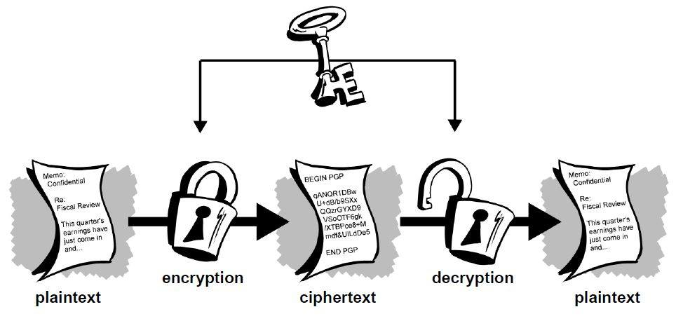
A cipher is simply just a set of steps (an algorithm) for performing both an encryption, and the corresponding decryption.
Asymmetric Key Cipher
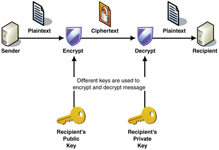
An encryption system in which the sender uses a public key to encrypt the message and receiver uses a private key to decrypt the message.
Symmetric Key Cipher
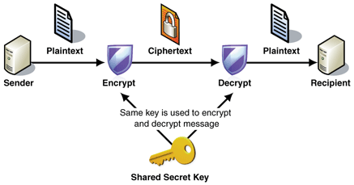
An encryption system in which the sender and receiver of a message share a single, common key that is used to encrypt and decrypt the message.
Block Cipher
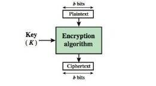
A block cipher is a deterministic algorithm operating on fixed-length groups of bits, called blocks, with an unvarying transformation that is specified by a symmetric key.
Stream Cipher
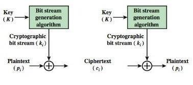
A stream cipher is a symmetric key cipher where plaintext digits are combined with a pseudorandom cipher digit stream (keystream). In a stream cipher each plaintext digit is encrypted one at a time with the corresponding digit of the keystream, to give a digit of the ciphertext stream.
Grain-v1:Motivation
- There is a need for cryptographic primitives that have very low hardware complexity.
- An RFID tag is a typical example of a product where the amount of memory and power is very limited.
- Forging an RFID tag can have devastating consequences if the tag is used e.g. in electronic payments and hence, there is a need for cryptographic primitives implemented in these tags.
- Grain is a stream cipher primitive that is designed to be very easy and small to implement in hardware.
Design Specification
Grain cipher consists of 3 main building blocks:
- LFSR(Linear Feedback Shift Register):
A Shift register whose input is a linear function of its previous state
The LFSR guarantees a minimum period for the keystream and it also provides balancedness in the output.
- NFSR(Non-linear Feedback Shift Register):
Shift register with non-linear function of previous state
The NFSR, together with a nonlinear output function introduces nonlinearity to the cipher.
- Output function
LFSR
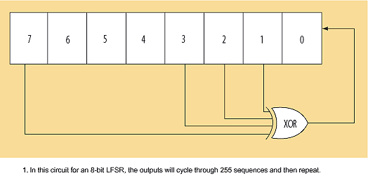
- Content of LFSR denoted by Si, Si+1, . . . , Si+79
- Feedback polynomial:
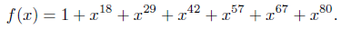
- Equivalent update function:
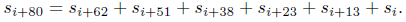
NFSR
- Content of NFSR denoted by bi, bi+1, . . . , bi+79
- Feedback polynomial:
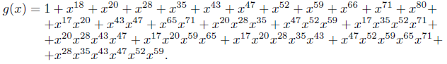
- Equivalent update function:
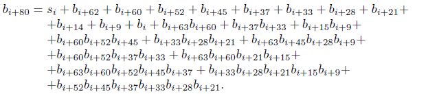
Output function
- It is filter function masked with some bits of NFSR.
- This filter function is chosen to be balanced, correlation immune of the first order and has algebraic degree 3.
- The filter function is defined as
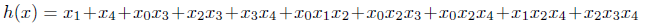
where the variables x0,x1, x2, x3 and x4 correspond to the tap positions si+3, si+25, si+46, si+64 and bi+63 respectively.
- Equivalent update function:
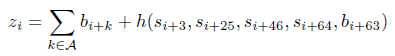
where A={1,2,4,10,31,43,56}
Key Initialisation
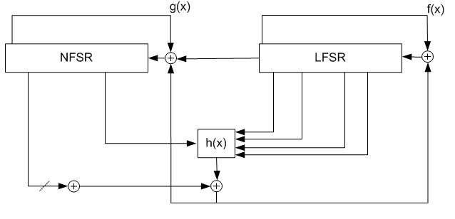
- The goal is to scramble the contents of the shift registers before the running key is generated.
- Let the bits of the key, k, be denoted ki, 0 <= i <= 79 and the bits of the IV be denoted IVi, 0 <= i <= 63.
- First load the NFSR with the key bits, bi = ki, 0 <= i <= 79, then load the first 64 bits of the LFSR with the IV, si = IVi, 0 <= i <= 63. The remaining bits of the LFSR are filled with ones, si = 1, 64 <= i <= 79.
- Then the cipher is clocked 160 times without producing any running key. Instead the output function is fed back and xored with the input, both to the LFSR and to the NFSR.
Design Criteria
- The security requirements correspond to a computational complexity of 280, equivalent to an exhaustive key search.
- It is well known that an LFSR with primitive feedback polynomial of degree d produces an output with period 2d −1.
- Because of the NFSR and the fact that the input to this is masked with the output of the LFSR the exact period will depend on the key and the IV used.
- The input to the NFSR is masked with the output of the LFSR in order to make sure that the NFSR state is balanced.
Throughput Rate
- The cipher outputs 1 bit/clock.
- It is possible to increase the speed of the cipher at the expense of more hardware which can very easily be done by just implementing the feedback functions, f(x) and g(x) and the output function several times.
- The last 15 bits of the shift registers are not used in the feedback functions or in the input to the filter function. This allows the speed to be easily multiplied by up to 16.
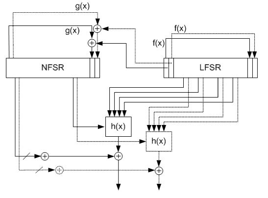
- An example of the implementation when the speed is doubled.
- Since, in the key initialization, the cipher is clocked 160 times, the possibilities to increase the speed is limited to factors 16 that are divisible by 160.
Strengths And Limitations
- Strengths
- Very small in hardware
- Uses as few gates as possible while maintaining high security
- The cipher is intended to be used in environments where gate count, power
consumption and memory needs to be very small.
- Limitations
-
The basic implementation has rate 1 bit/clock cycle. The speed of a word
oriented cipher is typically higher since the rate is then 1 word/clock.
Cryptanalysis
Resistance against all known cryptanalytic attacks is the most
important property of a new cipher. There should be no attack faster
than exhaustive key search.
Correlations
- Bits in LFSR and NFSR are balanced
- g(x) is a balanced function, therefore bits in the NFSR are uncorrelated to the
LFSR bits
- h(x) is correlation immune of first order
- As one input to h(x) comes from NFSR and as h(x) is XORed with 7 state bits of
NFSR, correlations of output of generator to sums of LFSR bits will be small
enough to prevent the attacks on grain cipher
Algebraic Attack
A filter generator alone with output function h(x) of degree only three
would be very vulnerable to algebraic attacks.
The filter function h(x) has one input coming from the NFSR and the
output function is xored with a linear combination of NFSR-state bits.
So the algebraic degrees of the output bits are large in general, and
varying in time. This will defeat algebraic attacks.
Chosen-IV Attack
The Hamming weight of the differences in the full initial 160-bit state
for two IV’s after initialization is close to random. This should prevent chosen-IV attacks.
Time/Memory/Data Tradeoff Attack
Cost of time/memory/data tradeoff attack on stream ciphers is O
(2^n/2 ) [where n is the number of inner states of the stream cipher].
This function does not become linear in the remaining variables by
fixing less than 3 of its 5 variables. Hence, the sampling resistance of h(x) is large.
Fault Attack
The strongest attacks conceivable on any cipher, are fault attacks.
The attacker can apply some bit flipping faults to one of the two
feedback registers at his will.
He can reset the device and then apply another randomly chosen
fault.
Information may be extracted about LFSR state bits if some single bit
flipping is induced in LFSR.
However, Faults in NFSR propagate nonlinearly and their evolution
will be harder to predict.
Thus, a fault attack on the NFSR seems more difficult.
Comparison with other Hardware Ciphers
-
Grain provides a higher security than several other well known
ciphers intended to be used in hardware applications.Well known
examples of such ciphers are E0 used in Bluetooth and A5/1 used in
GSM.
-
Compared to E0 and A5/1, Grain provides higher security while
maintaining a small hardware complexity.